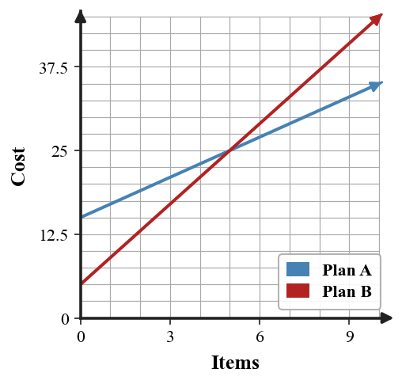

1.
Does the boundary line belong to the solution set for $y\ge -3x+2$?
2.
The graph shows a linear inequality. Identify the boundary type and write one possible inequality represented by the graph.

3.
Write the slope-intercept form template and name what each letter represents.
4.
Graph $3x+2y=12$ by finding intercepts. Then explain how the intercepts helped you choose points.

5.
Identify whether the table has constant differences or constant ratios.
| $x$ | 0 | 1 | 2 | 3 |
|---|---|---|---|---|
| $y$ | 5 | 10 | 20 | 40 |
6.
The graph shows two cost models. Estimate the value of $x$ where the costs are equal, then write the equation that the intersection represents.
